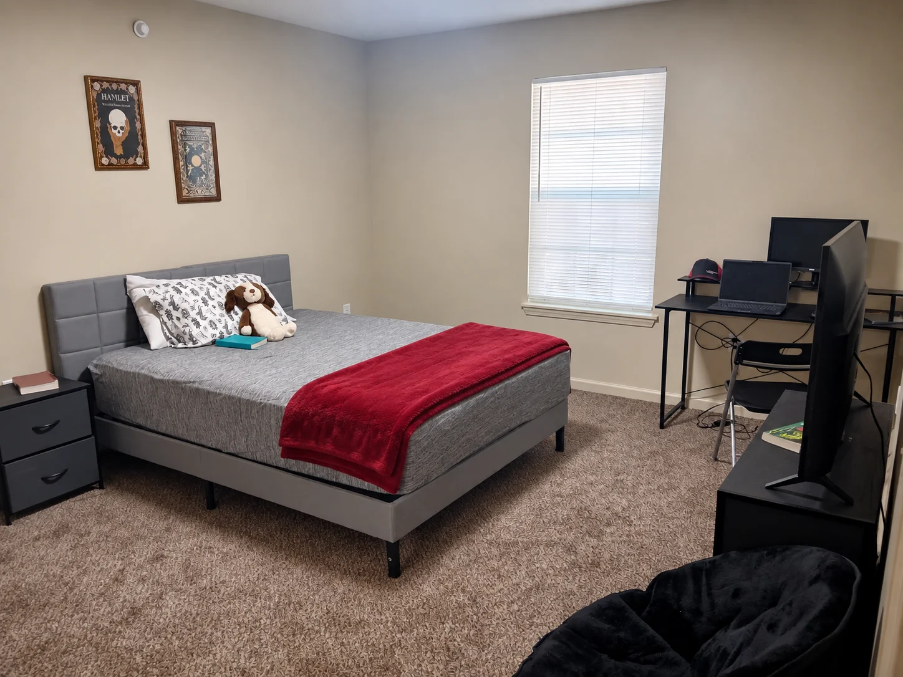
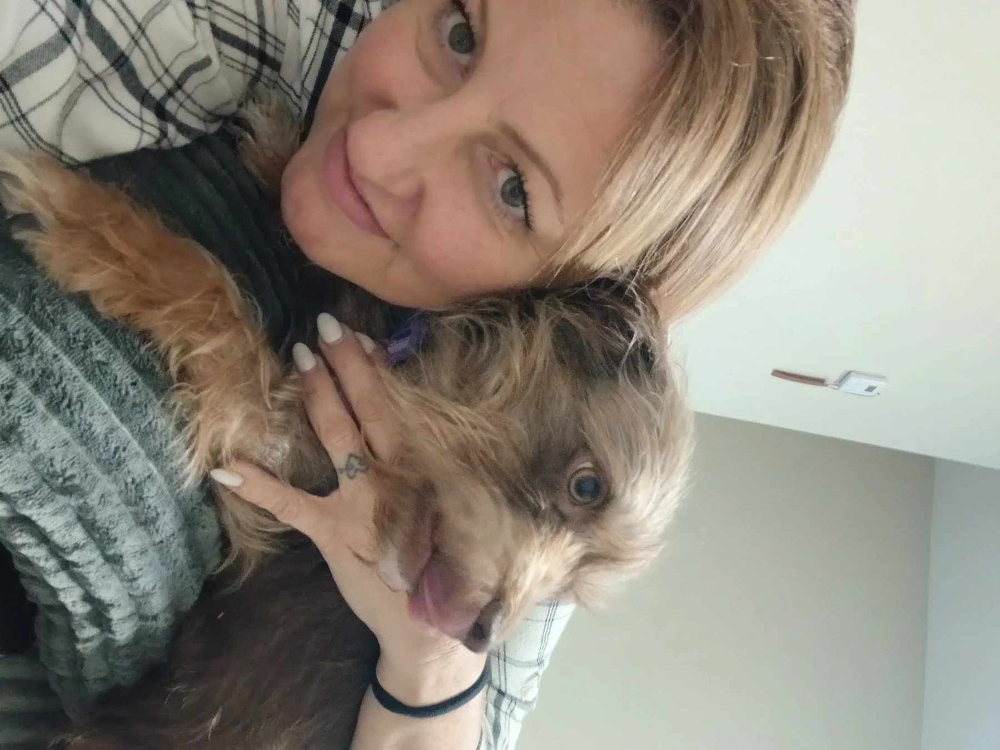

Dear Prison Pals,
I am going to have to start sending y'all some of the blog posts from my other series besides the letters I write to you. I think you would really enjoy some of them. Maybe one day I'll just start copying and pasting into a message and see how many characters 20K, or whatever the limit really is!
I promised pictures, so here goes me! My room looks so simple in the picture, but in my mind, it is like a palace. Haha. And that's my little doggy, Willa. My BFF!


Actually, I think I'm going to send my latest blog at the end of this letter. It was inspired by my last letter to you when I asked if wanting a Christian man who will pray with me was too much to ask!!!
I was having a really bad day Monday. I was stuck in my head and couldn't get out. Depression and anxiety felt like they were overtaking my soul. I almost left work. I was holding back tears and screams all day.
But somewhere in the middle of all that, I had another spiritual awakening. I surrendered all the little things in my life I was still trying to control to Him. It started with a worship song in the middle of work then a prayer. Every time I think I've reached the max level of human peace, God blows my mind and shows me there's more. Crazy!
People are always asking how I seem to never let anything or anyone bother me. The truth is, I was never like that before prison. In county jail, I was a mess. Ask Tree if you don't believe me. I was getting into fist fights and being super immature.
The girl I rode with in the transport van gave me a pep talk on the way to prison, and one thing stuck with me my entire bid: "You got to decide how to do your time right now." Are you going to stress out, let every little thing bother you, and do hard time?
Now, I was still fist fighting and being a mess in reception, so apparently the wisdom didn't kick in immediately. Haha. But eventually something changed.
I looked around and saw misery, suffering, impatience, intolerance, and pain. I knew I wanted to change. I wanted to grow and get out different than I went in because the same hadn't been working for me.
I had been successful at different times in my life, but I was never truly happy. I was always anxious and running. From jobs. From myself. From God. From my family. I was high-strung, impatient, and constantly in a panic. It was no way to live.
So I set one main goal for my time in prison: balance out my mental health.
I knew God and staying clean were the top priorities. I didn't do any of it perfectly, but every time I stumbled, I got back up a little quicker and stayed up a little longer. Even through serious trauma, like my father committing suicide and then finding out truths I never thought possible, I prioritized my mental health which started with balance.
Maybe we set too many goals sometimes. We either have all this time and expect too much of ourselves, or we look at the practically nonexistent resources and expect nothing. I had plenty I wanted to accomplish, but I always circled back to my mental health. Balance became my prison mantra.
So I practiced it in the smallest, stupidest situations. The chow line, for example. If somebody skipped me, oh well. If it took two hours, they ran out of food, or we were eating at 11:45 PM, it really sucked, but I wasn't going to let it work me up. Honestly, where did I have to be that couldn't wait?
Psych was harder. I was trying to get my medication to the lowest but most effective dose while dealing with absolutely terrible prison medical care. I learned to stay calm even when I really wanted to cuss somebody out, and even when they probably deserved it. I used my manners, stood my ground, explained my goal, and kept asking them to help me accomplish it.
One of the two dozen times they randomly forgot to fill my prescription, they told me to come back in a few days. I very politely told them I would just wait right there until then. I'd worked too hard for the balance I'd achieved, so I didn't mind waiting. The nurse ended up sneaking me my meds and told me to come back at the end of pill line the next day.
Some people in there care. Most don't. But none of them were worth my sanity.
I don't even know why this is what I ended up writing to y'all about today. Maybe one of you needed to hear it. Maybe all of you did. Or maybe I'm just rambling.
Maybe your word isn't balance. Maybe it's patience. Peace. Loyalty. Faith. Discipline. Forgiveness. Hope.
Whatever it is, you don't have to become a completely different person overnight. I sure as hell didn't. I'm still trying.
But no one is worth my peace, so today I am quick to say BYEEEEEEE!
I love you guys dearly.
Love always,
I Am Amy